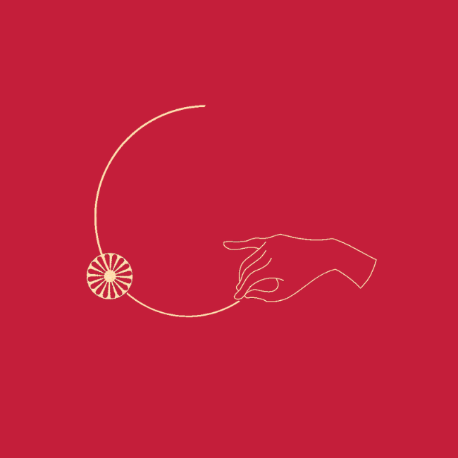

Acceso privadoEscribe el usuario y la contraseña que te compartí.
Tu membresía mensual de seguimiento venció; renuévala para seguir viendo tus recursos.
La mensualidad incluye tu lectura del mes y mantiene tu acceso a todos tus materiales.
Tus descargas del primer mes siguen siendo tuyas.
Renovar mi membresía¿Ya pagaste o tienes dudas? Escríbeme por WhatsApp.
Este espacio es de acompañamiento y reflexión; no sustituye la atención psicológica ni médica.
Aquí vas a encontrar lo que trabajamos en tu lectura y los recursos para acompañarte a ti y a Obed en las próximas semanas. Ve a tu ritmo. Vuelve cuando lo necesites.
El resumen de lo que trabajamos, para ti y para Obed.
Lo central: desbloquear la intuición y liberar el miedo — en ti y en Obed.
Cada ejercicio tiene un audio con mi voz y, cuando aplique, un video, con botón para descargar. Hazlos en un lugar tranquilo.
Para los desbloqueos en general y para normalizar la energía, regresándola a lo que Grabovoi llama "la norma del Creador".
Un ejercicio de catarsis: soltar la energía estancada para poder avanzar.
Para apaciguar la energía violenta, hacia uno mismo y hacia los demás, y cultivar calma. Este es un material visual importante: Ana y Tania lo usan todos los días durante al menos un mes.
Para practicar mínimo 3 y máximo 6 meses. Tres temas: intuición, miedo y perdón. Frente a un espejo, mírate a los ojos y repite la frase mientras das golpecitos suaves en cada punto, en este orden.
Si alguna frase se te dificulta, repite en su lugar:
Dos caminos de perdón, a tu ritmo: de ti hacia tu mamá, y de ti hacia ti misma como madre.
Las joyas son un lenguaje para la psique. A cada pieza le confiero intenciones y programaciones; al traerla puesta, eso se suma a la carga simbólica de sus materiales, y la pieza se vuelve un anclaje muy completo: un recordatorio en la piel de la idea nueva que eliges.
Es un acompañamiento simbólico —una reprogramación simbólica, una forma de anclar una intención—. Lo que se cuenta de cada piedra es tradición y creencia, no un efecto comprobado. No sustituye la atención psicológica ni médica.
Toca una piedra para abrir su ficha: su imagen para la psique, la idea que ayuda a anclar y por qué puede ir con Obed. Desde ahí la agregas a la pulsera.
Piedras y metales elegidos:
Aún no eliges piedras.
Se abre WhatsApp con tu pedido escrito. Tania te confirma el precio final antes de hacer la pieza.
Cada pieza es única; estas ya encontraron dueña o dueño. Quedan aquí solo como inspiración.
Incluye la lectura del mes + acceso a tus materiales + material nuevo.
Pagar mi membresíaSi tienes cualquier problema para pagar, escríbeme por WhatsApp.
Importante. Este espacio es de acompañamiento, reflexión e introspección a partir de la lectura simbólica de las cartas. No sustituye la atención psicológica ni médica, ni ningún tratamiento.
Si tú u Obed necesitan apoyo profesional —también con el consumo de sustancias—, en México pueden llamar gratis a la Línea de la Vida: 800 911 2000, las 24 horas, los 365 días del año.